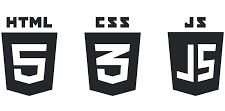
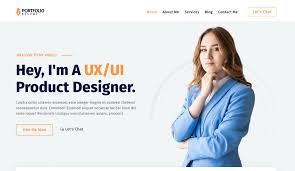

This is my official portfolio website to shows all
Details and work experience on web development..
I am a passionate Web Application Developer with a strong focus on building user-friendly, efficient, and creative digital solutions. I enjoy transforming ideas into responsive, functional web applications that solve real-world problems and deliver value to users. My expertise includes working with modern web technologies, frameworks, and databases, enabling me to design both front-end and back-end solutions effectively. I am committed to continuous learning, staying updated with the latest trends in technology, and applying innovative approaches to development. Beyond coding, I value collaboration, problem-solving, and delivering projects on time with quality. My goal is to create meaningful applications that inspire, connect, and make a difference.

(June 2024 – August 2024)
(January 2023 – March 2023)
(September 2023 – December 2023)
